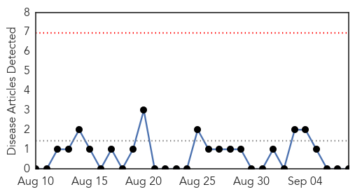
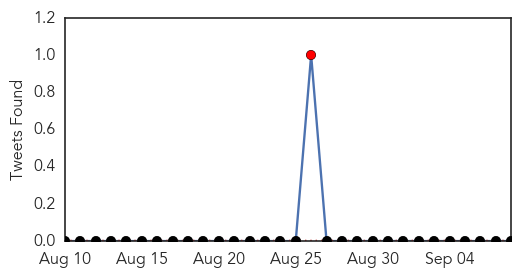
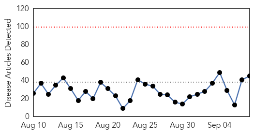
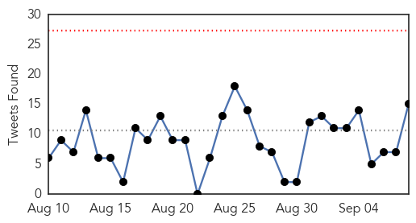
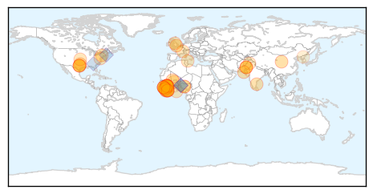
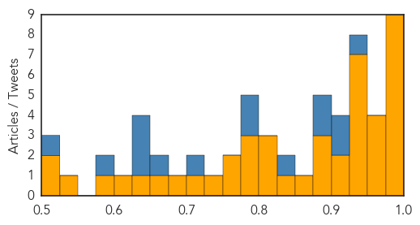

Mumps
30-Day Web Trend
0 alerts, 0 warnings

30-Day Twitter Trend
1 alerts, 0 warnings

Article Locations

Article Confidences

Top Articles:
-
No articles found for Sep 08, 2015
Top Tweets:
-
No tweets found for Sep 08, 2015
Ebola
30-Day Web Trend
0 alerts, 0 warnings

30-Day Twitter Trend
0 alerts, 0 warnings

Article Locations
Article Confidences
Top Articles:
- 0.996
- Sierra Leone Confirms Three New Ebola Cases
- 0.996
- Liberia returns to zero Ebola infection - Liberia
- 0.995
- Ebola vaccine studies progress as marketing quells suspicions of modern medicine
- 0.995
- Health Ministry Poised to Establish Sierra Leone Centre for Disease Control/National Institute for Public Health - Sierra Leone
- 0.991
- West African child is paralyzed by vaccine-derived polio
- 0.986
- Sierra Leone officials confirm 3 new cases of Ebola
- 0.984
- New Sierra Leone Ebola case
- 0.981
- Three new Ebola cases in Sierra Leone quarantine village
- 0.978
- Independent Report On Presby’s Ebola Response Criticizes Preparedness, Communication « D Healthcare Daily
- 0.970
- Ebola: Nigeria recants on closure, re-opens all schools mid September
- 0.967
- New Sierra Leone Ebola cases frustrate efforts to end outbreak
- 0.963
- Fleet of Ambulances to boost the restoration of basic health Services Post-Ebola
- 0.958
- Another Ebola case in S. Leone village
- 0.943
- Polio resurfaces in Mali from Ebola-hit Guinea: WHO
- 0.942
- U.S. Disease Control Recommends That U.S. Residents Avoid Nonessential Travel To Liberia, But Encourages Airlines To Continue Flights
- 0.938
- Animal-to-Human Diseases a Public Health Hazard
- 0.938
- State-of-the-art labs to check infectious diseases planned
- 0.935
- ‘Polio virus resurfaces in Mali’
- 0.935
- Polio Resurfaced in Ebola-Ravaged Countries
- 0.933
- Failures of Dallas hospital during Ebola crisis detailed in new report
- 0.921
- Vaccines & Viruses: Vaccine-derived polio breaks out in Ukraine and Mali
- 0.911
- Ebola Alert: Doctor says virus lives in male survivors’ semen for over 4 months
- 0.893
- Polio resurfaces in Mali, country on ‘high alert’, says WHO
- 0.886
- Polio resurfaces in Mali from Ebola-hit Guinea, WHO says
- 0.880
- Failures of Dallas hospital during Ebola crisis detailed in new report
- 0.854
- Expert panel on what went wrong at THR
- 0.830
- Ebola Widow Carries on Husband’s Legacy
- 0.803
- CDC's wild disease hysteria overestimates disease transmission by up to 6,400%
- 0.803
- Brussels pledges €1 million to help children affected by Ebola
- 0.801
- Switzerland Identifies With Liberia’s Ebola Fight, Provides 15 Tons of Medical Supplies
- 0.794
- IMF chief urges Africa to spend responsibly
- 0.792
- Health Minister warns of existence of Ebola
- 0.787
- BMJ Blogs: The BMJ Blog Archive Trish Groves: How research data sharing can save lives
- 0.772
- Panel cites Epic EHR 'challenges' as contributing to Ebola misdiagnosis at Texas hospital
- 0.755
- Saira seeks US support towards upgrading disease surveillance system
- 0.736
- Saira seeks support to upgrade health laboratories
- 0.712
- CDC scientist Dan Brencic returns to receive award from Nazareth Academy
- 0.684
- US body to help ministry plan anti-polio drives
- 0.661
- Review finds Dallas hospital at fault in Ebola case
- 0.632
- Over 400 Health Workers to be trained
- 0.607
- Pilgrims given food, medical tips to ensure healthy Haj
- 0.590
- Saudi- Pilgrims given food medical tips to ensure healthy Haj
- 0.533
- Strengthening Health Reporting, Articles
- 0.522
- IMF Managing Director to Visit Liberia
- 0.515
- B’luru lab to co-develop Ebola drug with Public Health England
Top Tweets:
- 0.976
- Three new Ebola cases in Sierra Leone quarantine village - Yahoo News http://t.co/AUoasZLH7o ebola EVD
- 0.973
- New Sierra Leone Ebola case - The Brussels Times http://t.co/jEL1pX1gtP ebola EVD
- 0.973
- Drug to fight ebola, flu and yellow fever - New Zealand Herald http://t.co/USWaa7AT5R ebola EVD
- 0.939
- Liberia is Ebola-free for 42 days the outbreak that killed 4,800 wanes in West Africa Makehealthhappen africaagainstebola
- 0.923
- declared Liberia Ebola free after the virus saw a brief resurgence of cases Africaagainstebola
- 0.910
- Young Nurse Adopts Newborn After Mother Dies From Ebola Infection - Tech Times http://t.co/gsjIQMuEVQ ebola EVD
- 0.903
- .@WHO reports only 2 cases of Ebola in the week ending Sept 6. One each in Guinea & Sierra Leone. Good news but stillwaitingforzero
- 0.874
- Ebola vaccine studies progress as marketing quells suspicions of modern medicine - Washington Times http://t.co/NYDSaX4V26 ebola EVD
- 0.849
- Students in West Point, Liberia, Learn to Tell Their Own Stories September 7th ... - Ebola Deeply http://t.co/8hIfFDBZyb ebola EVD
- 0.845
- B'luru lab to co-develop Ebola drug with Public Health England - Times of India http://t.co/QkQ7RREXef ebola EVD
- 0.812
- 2 ways 2 stop epidemics like Ebola: Collaboration b/w local health systems & int. orgs & infectious disease research http://t.co/YyU4QwQ8HE
- 0.811
- Ebola in pregnancy: Screening and management of Ebola cases, contacts and survivors. Interim guidance http://t.co/4a1MikEC7Y
- 0.797
- RT: Ebola in Liberia travel notice now a Level 1 Watch; CDC no longer recommends enhanced precautions for travelers. http://t.…
- 0.797
- RT: Ebola in Liberia travel notice now a Level 1 Watch; CDC no longer recommends enhanced precautions for travelers. http://t.…
- 0.789
- Ebola Widow Carries on Husband's Legacy - Voice of America http://t.co/k4UNxR3S6n ebola EVD
- 0.771
- Health Promotion Unit Intensifies Ebola Awareness and a Prevention Campaign - http://t.co/NaiI6Jl8yj http://t.co/KceOm15NzI ebola EVD
- 0.729
- New Sierra Leone Ebola case - The Brussels Times http://t.co/X84NbbC1lI
- 0.684
- RT: More Ebola in Sierra Leone as Dallas probe notes missteps http://t.co/dsOoUgFoOz
- 0.666
- Ebola : Une menace à l’Afrique en est une pour toutes les autres parties du monde http://t.co/0jMPmlkUHV
- 0.638
- Ebola lesson 2: When nat’l capacities are overwhelmed, world must move immediately to combat emerging health threats. GHSASeoul
- 0.636
- Allocution de la Dir gén de l'@OMS sur la gouvernance mondiale de la santé: 18 mois après la flambée Ebola http://t.co/nCMwRrqGjU
- 0.596
- Lasker Awards Go to Scientists for Cancer Research, Ebola Response - Wall Street Journal http://t.co/C1Rxj2ymqm ebola EVD
- 0.538
- How the Kailahun district of Sierra Leone went from being an epidemic hot spot to Ebola-free http://t.co/8aWBe5tLDy